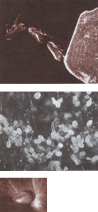

Emily Miller, a longtime animal care specialist at Pet Patrol in New York State, has spent most of her life in very rural Vermont with several cats and two St. Bernards. She is currently the mother of a marmalade tabby Sam, and is in search of the perfect Australian Shepherd.